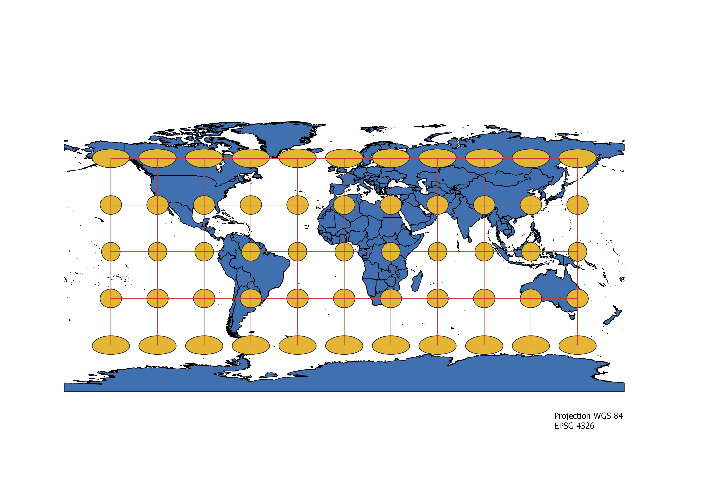
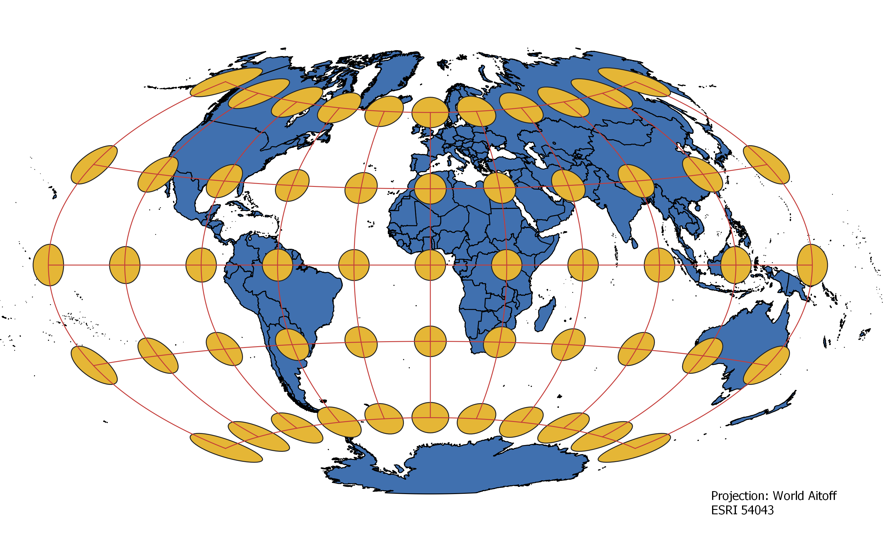
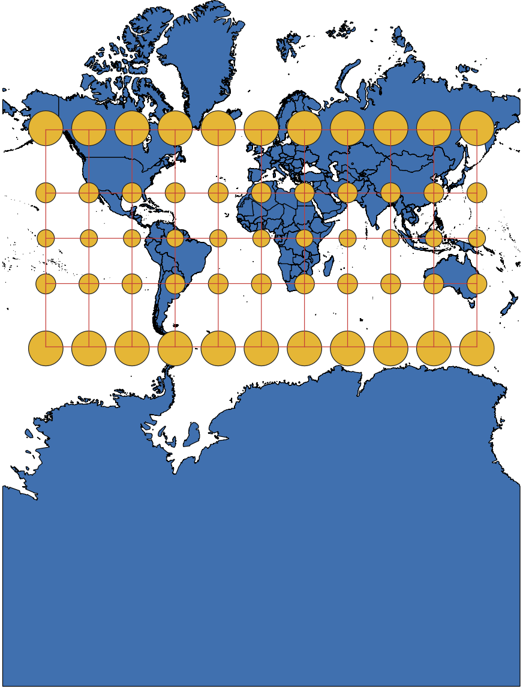
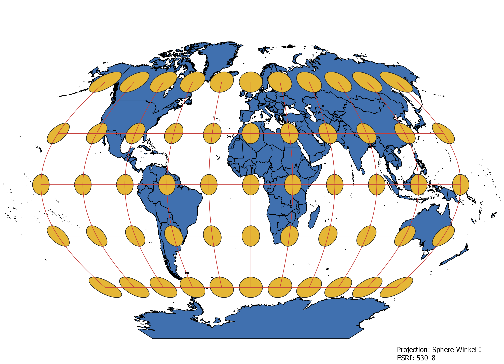
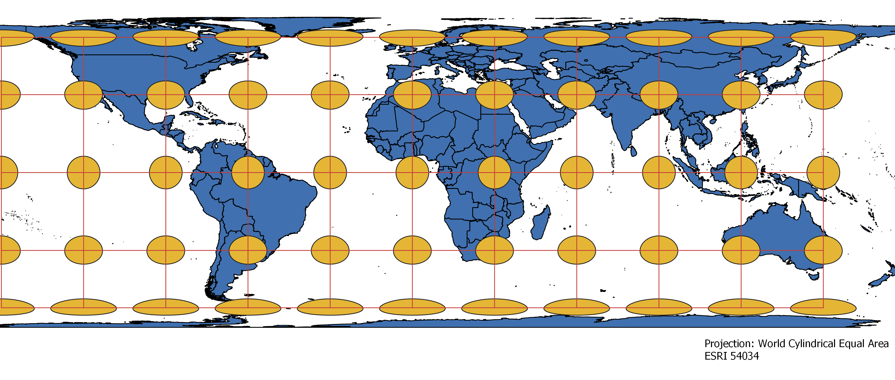
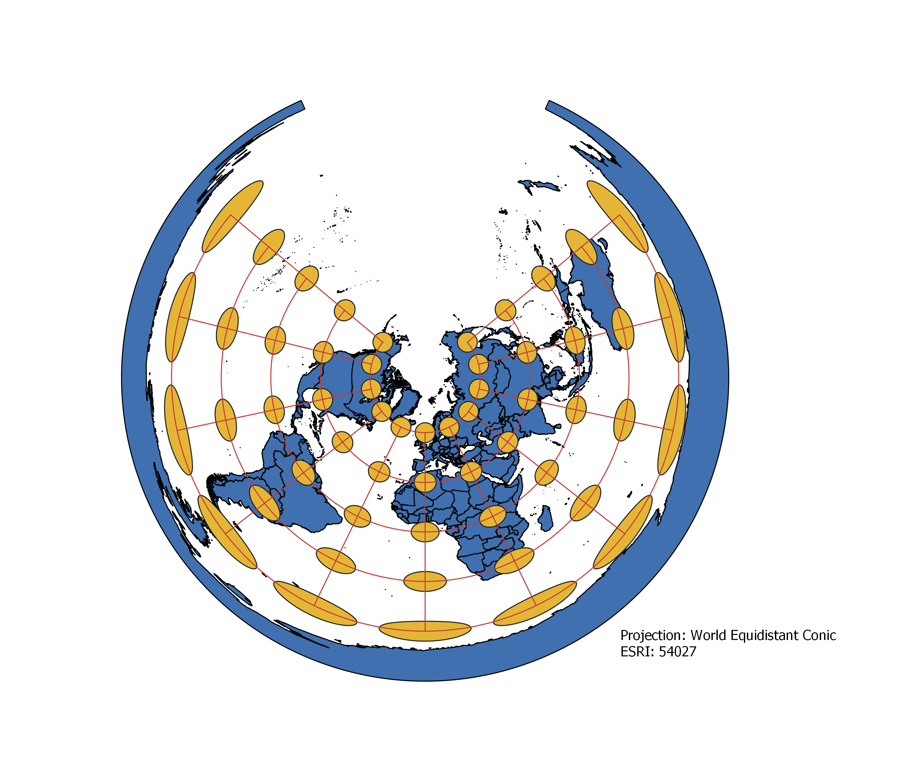
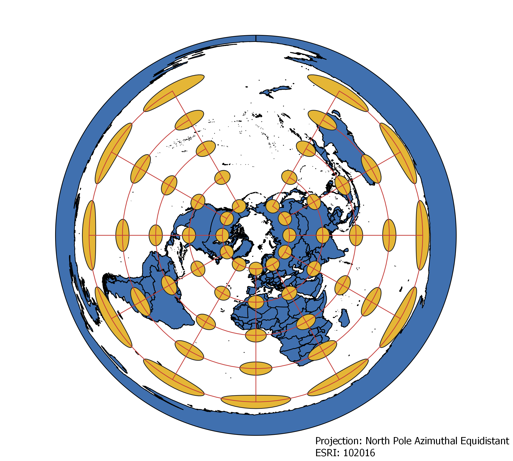
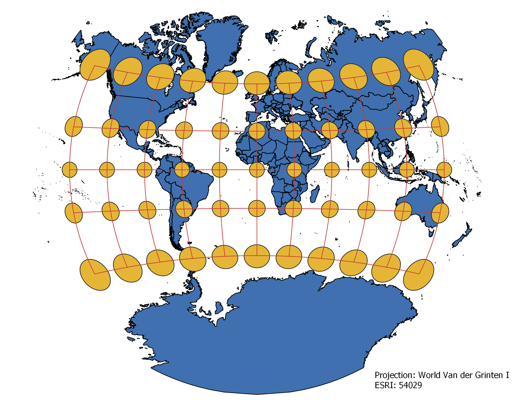

James Mulligan: Homework 2, World Projections
In Homework 2 I used QGIS to diplay different projections of the world
The projections that I used are: WGS 84, World Aitoff, Pseudo Mercator, Sphere Winkel, World Cylindrical: Equal Area, World Equidistant Conic, North Pole Azimuthal Equidistant, Wolrd Van der Grinten, and the World from Space
WGS84 Projection
This projection appears to distort the poles to a large degree in attempting to create a uniform grid of parallels and meridians.

Aitoff Projection
This one has less distortian than many others by not adhering to a strick grid, however, both area and shape are distorted moving away from (0,0)

Pseudo Mercator Projection
This projection perserves the shape of the world, however, that is at the expenseof extreme distortion towards the poles, as well as incredibly inacurate sizes.

Sphere Winkel Projection
The projection appears to be a compromise between size and shape, with distortion in both, but not to an extreme degree, the distortion appears to get worse moving away from (0,0)

World Cylindrical: Equal Area Projection
This projection focuses on accurate area at the cost of extreme horizontal stretching towards the poles

World Equidistant Conic Projection
This map experiences distortion moving away from the North Pole, with massive horizontal stretching towards the south pole, not accurate in either size nor shape

North Pole Azimuthal Equidistant Projection
This one looks similar to the World Equidistant Conic Projection, however it is more accurate regarding distance and direction from the North Pole.

Van der Grinten Projection
This projection appears to be attempting to compromise between shape and area, similar to the Aistoff Projction, while also making the spherical nature of the world more obvious

The World from Space Projection
This one represents what the world looks like from space, while accurate in both shape and size, its large failing is that it does not represent the entirety of the earth's surface and so cannot be used for the entire world
Data used for this project
Download Natrual Earth 1:10m Cultural Vector